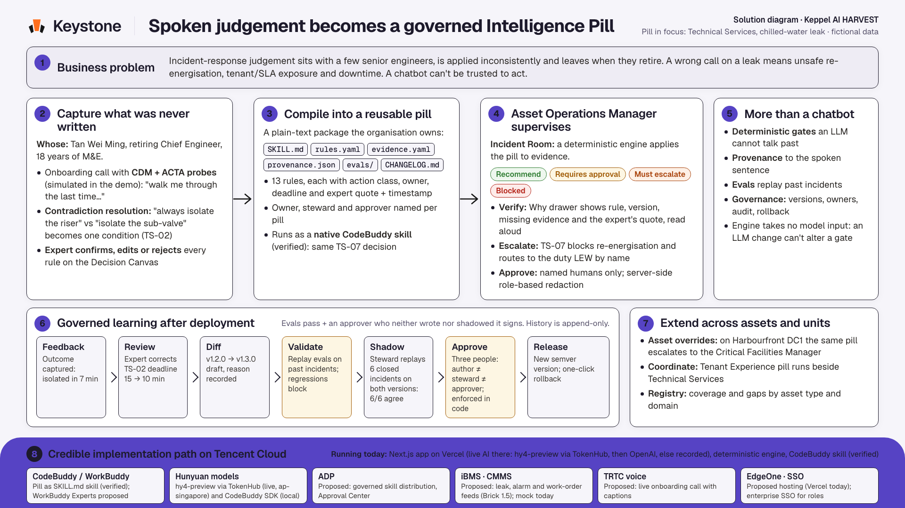

Solution diagram & architecture
Keystone compiles what a senior engineer knows into an Intelligence Pill — a versioned, tested, plain-text artefact the organisation owns, with deterministic gates no model can talk past.
The real-world problem
Keppel’s own brief: critical knowledge sits with a few experts; new staff need a long time to build it.
The useful part is tacit: when to break the rule, and why.
Replacing an employee costs 0.5–2× annual salary (Gallup); FM talent growth “is not keeping pace” (JTC, 2025).
A chatbot that answers from a manual will also answer when it shouldn’t.
REIT managers and property/facility-management organisations running mixed portfolios — offices, data centres, logistics. We model the real chain: REIT manager → property/facility manager → FM contractor, with 15 named personas.

Business architecture
The expert answers one wide question, then only what is still missing.
Tan Wei Ming · Rajesh Kumar
The AI only drafts. Every rule shows the sentence it came from, with a timestamp.
Tan Wei Ming
A deterministic engine applies the pill to the evidence of a live incident.
Priya Nair
Diff → eval replay on past incidents → shadow → approval → one-click rollback.
Hafiz · Priya · Goh
The same pill runs at a colocation data centre through asset overrides.
Every asset of that type
Reuse feeds the registry, which shows coverage and gaps by asset type and domain — so the next gap is visible before the next expert retires. Every stage in this row is built and working in the demo; nothing here is a mockup.
The reusable unit
pills/technical-services/chilled-water-leak/
Status precedence is fixed code:
not_applicable → blocked → escalate → needs approval → allowed
A second pill — tenant-experience/incident-comms — runs beside it during the same leak: it drafts the tenant notice under its own hard rules while Technical Services works the gate.
Technical architecture
Next.js 15 App Router · React 19 · TypeScript · Tailwind v4 · Vercel
Pure TypeScript. No LLM, no eval(), no string expressions.
Versions, approvals, audit.
Language work only. Never a decision.
1,302 automated tests, including adversarial and property-based tests (fast-check) over the engine and the governance layer. Design mapped to the IMDA Model AI Governance Framework (2020 and the 2026 Agentic AI edition), AI Verify, ISO/IEC 42001 and the NIST AI RMF.
How prompts drive the AI generation
One wide question first — “walk me through the last time…” — because an unprompted account gives up more than ten narrow questions do.
A schema-constrained “scribe” prompt maps speech into the rules.yaml schema.
Two answers about the same field with different claims disagree.
Tenant notices are drafted under the Tenant Experience pill’s hard rules.
The decision path takes no model input. Change the model, change the wording — you cannot change whether the gate holds.
Business value
0.5–2×annual salary to replace an employee (Gallup) — and with them, the judgement nobody wrote down.
>US$100kthe cost of more than half of significant data-centre outages; about 1 in 5 cost more than US$1M (Uptime Institute).
S$125ka month: one 10,000 sq ft Grade A floor at S$12.50 psf (CBRE Q2 2026). A two-week closure is ~S$58k in rent alone.
Technical Services aims to “cut downtime and costs” (Investor Day 2026). Keppel DC REIT reports ~12% better effective PUE on asset-enhanced colocation assets (AR2025) — the gains our data-centre overlay is built to protect.